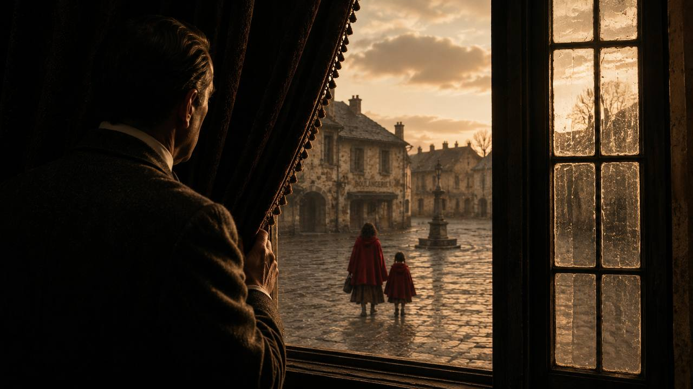
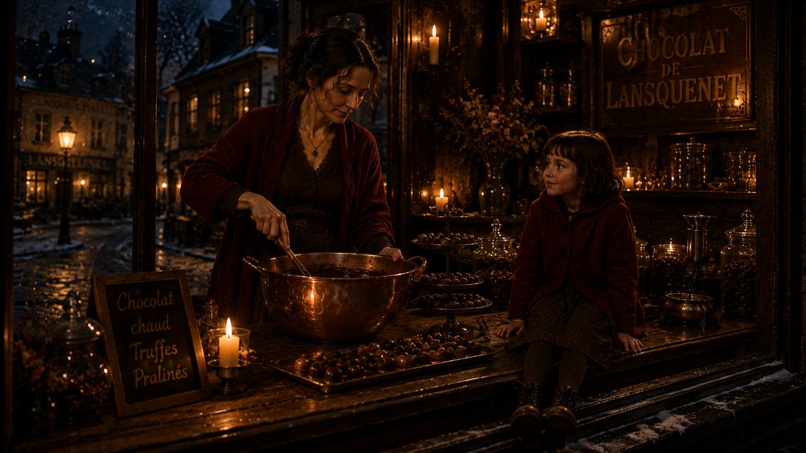
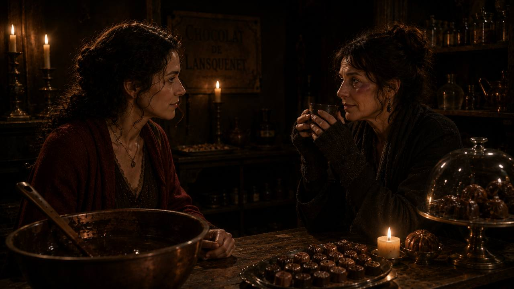
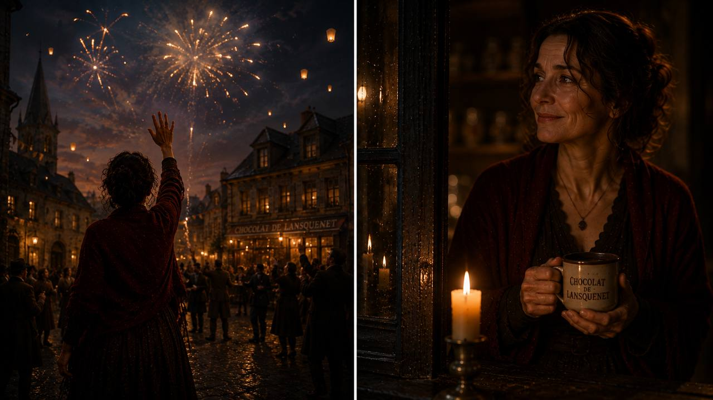
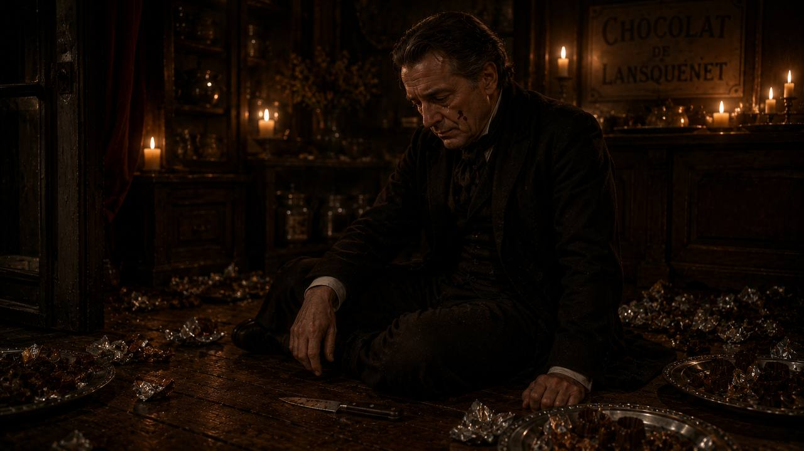

A woman in a red cloak. A child. A bag of cocoa beans. A grey village at the start of Lent. What happens when someone new opens a door — and the wind starts to turn?
Two strangers in red walk into a grey village at the start of Lent. Everyone else is walking to church. Nobody smiles at them yet.
After watching, in one sentence: What did you notice first?

One February morning, a sly north wind blew into a small French village called Lansquenet-sous-Tannes. It was the first Sunday of Lent. Everyone was walking to church. Everyone — except two strangers.
A woman in a bright red cloak, and a small girl beside her, also in red. The woman's name was Vianne Rocher. The child was her daughter, Anouk, six years old. From behind a heavy curtain, the mayor — the Comte de Reynaud — watched them cross the square and stop in front of an old, closed shop.
Vianne knocked on the door of an old woman's house: Armande Voizin, seventy-two, with sharp eyes.
"You are not going to church, then?" "No. I don't go." Armande almost smiled. "Come in. The shop is yours."By evening, everyone in Lansquenet knew. The stranger in the red cloak had come during Lent. She had not gone to church. She was going to sell — chocolate.
Two village women talk in low voices as they leave the church on Sunday morning. Listen once — then answer. You can listen again if you need.
Marie: Did you see her? Walking straight past the church, that woman in the red cloak.
Jeanne: During Lent, no less. And with a small child. What kind of mother —
Marie: Armande gave her the key. Just like that. To the old shop across the square.
Jeanne: The Comte was furious, I could see his face. She wants to sell chocolate. Chocolate. During the Great Fast.
Marie: Well. The north wind brought her. Maybe the north wind will take her away again.
Three short lines from Act I. Listen — then repeat, matching the rhythm.
You will see a still from Act I for 5 seconds only. When it disappears — describe as much as you can remember. Do it three times, each time noticing something new.
Now with the picture open. Describe each layer of the scene — as if you are painting it for someone on the phone who cannot see.
Armande's first response to Vianne was: "You are not going to church, then? Come in. The shop is yours." — she gave a stranger a key on the first day.
Retell Act I in your own words — as if you are a villager telling a friend from the next town. Aim for two full minutes without stopping. Don't worry about mistakes.
Chocolat began as a novel by the English writer Joanne Harris in 1999. She remembered her grandmother's small sweet shop in a strict old village and wanted to write about the moment someone new arrives — with a different smell, a different smile, a different god — and the village has to decide: are we going to fight this, or are we going to try one small taste?
One year later, in 2000, the Swedish director Lasse Hallström turned the novel into a film with Juliette Binoche, Judi Dench and Johnny Depp. Five Academy Award nominations — but the real power of the film is a very simple question: what are you afraid to taste?
Vianne opens the shop. She has a very quiet trick: when someone stands too long at the window, she opens the door — and asks one question. "What is your favourite?"

By the end of the week, the shop was ready. Behind the counter — a huge copper bowl, warm and heavy, full of dark melted chocolate. Above the door, in fresh gold letters: CHOCOLATERIE.
When someone stood too long at the window, Vianne opened the door and asked one question: "Excuse me, madame — what is your favourite?" She looked at them once, very carefully, the way a doctor listens for a heartbeat. Then she chose one chocolate — sometimes with chilli, sometimes with rose. She placed it in their hand. Nine times out of ten, she was right.
Josephine Muscat came at night. She wore long sleeves in warm weather. She had a purple mark under one eye. Vianne poured her a small cup of hot chocolate with cream.
"He hits you, doesn't he?" "You don't have to answer. But if you ever want to leave — my door is open."Josephine did not say yes, and she did not say no. But she drank the chocolate slowly. And when she left, she stood a little straighter.
One grey morning, the village woke up to a new sound — oars against wooden boats. The river gypsies had arrived. On the deck stood a tall man with red hair and a silver earring. His name was Roux. The Comte was furious and told every shopkeeper to close their doors. But Vianne walked down to the river with a basket of chocolate and a jug of coffee.
Vianne is speaking to her very first customer, Madame Clairmont, who has walked past the window three times. Listen carefully — she talks about her chocolate and about the person.
Vianne: Come in, madame. It's cold outside, and you've been standing at that window for a long time. No, no — you don't have to buy anything. Just one small taste. On the house.
Now — let me look at you. Hmm. You are a woman who likes strong tea. Who reads the same book every winter. Who sits closer to the fire than to the window. Try this one. Bitter chocolate — with a little chilli. Trust me.
Everyone has a favourite, madame. They just don't always know it yet.
You are a young reporter from a Paris newspaper. You have travelled to Lansquenet to write about "the strange woman with the chocolate shop". Your partner is Vianne. Ask all six questions in your own words — then swap.
Swap after all six. Then compare: which question was hardest to answer? Which was hardest to ask?
Pick one option in each pair. Then defend your choice in 2–3 sentences. There is no correct answer.
Answer each question in one full sentence. The next question builds on your answer. Do not skip.

A customer stands too long at your window. Open the door. Invite them in for one small taste. Guess their favourite — with chilli, with rose, with orange. Place it in their hand. Use: "Everyone has a favourite. They just don't know it yet." · "Try this one. Trust me." · "On the house — no obligation."
You have never eaten chocolate. You say you don't want any. Underneath — you are curious. Let her guess wrong once, then right. Use: "Just a small piece then, madame…" · "How did you know?" · "My mother would kill me if she saw this."
Play it twice. First — the villager stays polite. Second — the villager confesses one real thing. Compare how the room changes.
A village needs shared rules and a shared faith. Once you invite strangers with different manners, the strong ones — like Josephine's husband — lose their grip. The Comte is not cruel; he is holding a hundred years of village life together.
The Comte's order is quiet cruelty. Josephine is hit and no one speaks. The gypsies are not the danger — the silence is. Vianne breaks the silence with one cup of chocolate at a time.
By the fifth week, Lansquenet was quietly split in two. Josephine had left her husband and moved into the small room above the chocolaterie. Armande's grandson was learning to laugh again in Vianne's kitchen. On the other side of the square, the Comte's face grew whiter.
Then Vianne did something no one in Lansquenet had done for a hundred years. She stuck a bright orange poster on the door: "Grand Festival du Chocolat · Easter Sunday · Everyone welcome — including the river people." The Comte saw it from his window. Easter Sunday was his day. And she had put chocolate in front of it.

The night before Easter, someone comes down to the river with a can of oil. The next night — a very tired Comte finds an unlocked door.

The night before Easter, someone set fire to Roux's boats. Three of them burned. Roux stood on the bank in silence and looked at the water.
That same night, very late, someone tried the door of the chocolaterie. It opened — Vianne had forgotten to lock it. The Comte stepped inside with a small kitchen knife. He walked to the window display, where a huge dark chocolate figure of Vianne's own design stood ready for the festival. He raised the knife. And then he stopped. He was crying. He had not eaten anything for two days of prayer. His hands were shaking.
He put down the knife. He picked up one small square. He put it in his mouth. He closed his eyes. Something inside the Comte — something locked for a very long time — broke open. He sat down on the floor of the shop and he wept like a child. He did not stop until the tray was empty.
Vianne found him in the morning, asleep among the empty silver plates. She did not wake him. She covered him with her red cloak.
In the little grey church, the young priest Père Henri looked at the Comte's sermon on the wooden stand. Then at the empty pew where the Comte should have been. Then at Vianne standing in the open doorway in her red cloak. Père Henri folded the sermon and put it in his pocket. For the first time, he spoke his own words:
"I don't think we can judge each other by what we don't do — by what we deny ourselves, what we resist, who we exclude. I think we've got to measure goodness by what we embrace, what we create — and who we include."
Outside, the north wind stopped. A softer wind, warmer, smelling of the south, began to blow across the square. Vianne felt it on her face. This time, she looked at Anouk, and at Roux — and she did not pack her bag. She stayed.
On Easter Sunday, the young priest speaks his own words instead of the sermon the Comte wrote. Listen for what he keeps and what he lets go.
I'm not sure what the theme of my homily today ought to be. Do I want to speak of the miracle of Our Lord's divine transformation? Not really, no. I don't want to talk about His divinity. I'd rather talk about His humanity.
I mean, you know, how He lived His life, here on Earth. His kindness, His tolerance… Listen, here's what I think. I think that we can't go around measuring our goodness by what we don't do — by what we deny ourselves, what we resist, and who we exclude.
I think we've got to measure goodness by what we embrace, what we create, and who we include.
"Measure goodness by what we embrace, what we create — and who we include."
The morning after Easter, the Comte sits at his desk. He wants to write a note to Vianne — but he does not know how to begin. Write the first three sentences of that note (3 minutes). Then say them out loud in his voice, as if you are sealing the envelope.
Everyone has gone home. The last candle is burning. The Comte is standing at the edge of the square, watching you clean up. You know what he did — and what he ate. You want to say one true thing. Use: "Monsieur le Comte — please. Sit down." · "You don't have to pretend with me." · "There's still some chocolate. If you want it."
You are ashamed. You are also — for the first time in years — hungry. You do not know how to be soft. But you have to say something to the woman who covered you with her red cloak while you were sleeping. Use: "Madame Rocher — about last night…" · "I owe you an apology I don't know how to make." · "You could have left me on the floor."
Play it twice. First — the Comte is stiff and formal. Second — the Comte finally sits down. Compare which version feels closer to real change.
On Easter Sunday, a village that had forgotten how to be kind sat down and ate together — the priest, the widow, the outsider, the river people. The Comte was carried, not defeated. That is what Easter is supposed to mean. Kindness won.
Vianne put chocolate in front of Easter. The mayor humiliated himself in a shop window. The priest abandoned the sermon he was given. A hundred years of tradition — broken by a woman who does not even live there. Some things a village needs to keep.
The three arcs of the film — arrival, shop, festival — all end with the wind changing direction. Take two minutes: Why did the wind change? Whose wind was it — Vianne's, the village's, or your own?
You have thirty seconds to make a friend watch Chocolat tonight. No spoilers about the ending — just enough to hook them. Talk fast. Talk warm. Talk like you saw it last night.